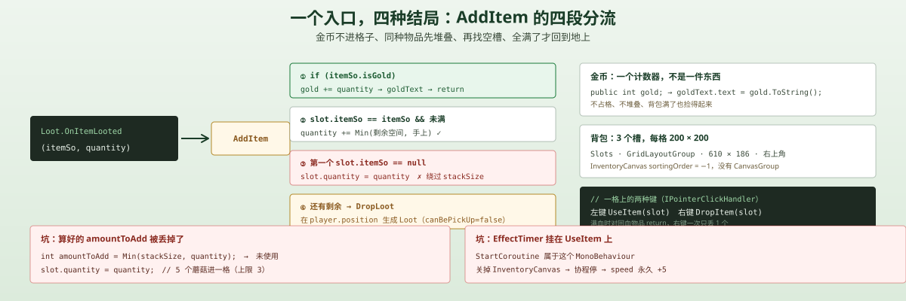
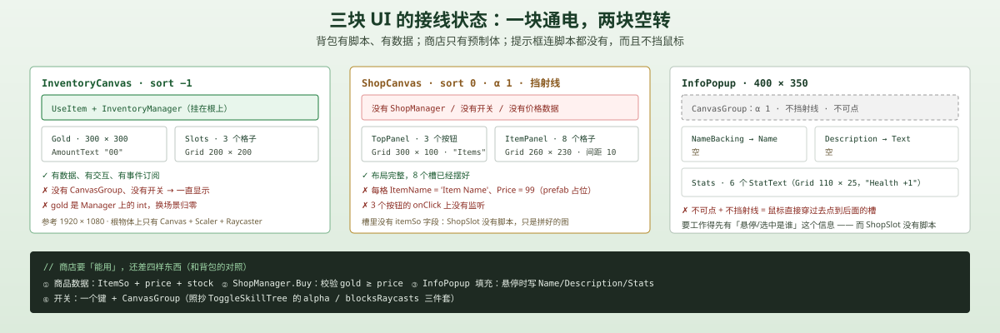

一句话说清这天的内容
Day 13 把东西丢到了地上，今天把它接进背包：ItemSo 描述「一个物品是什么」，InventoryManager 用 3 个槽接住 Loot.OnItemLooted，按金币 → 堆叠 → 空槽 → 溢出四段处理；左键使用、右键丢弃；UseItem 按字段生效，有 duration 的过几秒再回滚。
商店只做完了架子：8 个 ShopSlot、3 个 ShopButton、一个 InfoPopup，但没有 ShopManager、没有购买逻辑，价格还是 prefab 上写死的 99。
脚本关系
| 脚本 | 角色 | 行数 | 关键能力 |
|---|---|---|---|
ItemSo | 新 | 19 | 纯数据：名字、描述、图标、是否金币、堆叠上限、属性、持续时间 |
UseItem | 新 | 29 | 把 ItemSo 的属性写成 StatsManger 的调用，duration 到期回滚 |
InventorySlot | 新 | 50 | 一个格子：IPointerClickHandler，左键用、右键丢 |
InventoryManager | 新 | 91 | 3 个槽、金币计数、AddItem 四段分流、溢出丢回地上 |
StatsManger | 改 | 48 | 加 statsUI / healthText 引用与 UpdateHealth / UpdateMaxHealth / UpdateSpeed |
StatsUI | 改 | 47 | 开关时同步 blocksRaycasts；UpdateAllStats 改成 public |
调用链（拾取入包）：
Loot.OnItemLooted(itemSo, n) → InventoryManager.AddItem → isGold? gold += n : 堆叠 → 空槽 → 溢出 DropLoot
调用链（左键使用）：
InventorySlot.OnPointerClick(Left) → InventoryManager.UseItem(slot) → UseItem.ApplyItemEffects → StatsManger.UpdateHealth / UpdateMaxHealth / UpdateSpeed → slot.quantity--
ItemSo：一份数据，没有一行行为
[CreateAssetMenu(fileName = "New Item")]
public class ItemSo : ScriptableObject
{
public string itemName;
[TextArea] public string itemDescription;
public Sprite icon;
public bool isGold;
public int stackSize = 3;
[Header("Stats")]
public int currentHealth;
public int maxHealth;
public int speed;
public int damage;
[Header("For Temporary Items")]
public float duration;
}三组字段，对应三种用途：
| 组 | 字段 | 谁用 |
|---|---|---|
| 外观 | itemName / itemDescription / icon | 掉落物（Day 13 的 UpdateAppearance）、未来的 tooltip |
| 规则 | isGold / stackSize | InventoryManager.AddItem 的两处分流 |
| 效果 | currentHealth / maxHealth / speed / damage / duration | UseItem.ApplyItemEffects |
注意这里没有任何方法。 ItemSo 是纯数据，效果写在 UseItem 里。这和 Day 8 的技能树是同一个套路：SkillSO 只放名字/上限/图标，效果写在 SkillManager 的 switch 里。
统一的理由是：数据资产给策划改，效果代码给程序写。代价是「新增一个效果类型」要改代码，而不是配一个资产。
UseItem：只对大于 0 的字段生效
public void ApplyItemEffects(ItemSo itemSo)
{
if (itemSo.currentHealth > 0) StatsManger.Instance.UpdateHealth(itemSo.currentHealth);
if (itemSo.maxHealth > 0) StatsManger.Instance.UpdateMaxHealth(itemSo.maxHealth);
if (itemSo.speed > 0) StatsManger.Instance.UpdateSpeed(itemSo.speed);
if (itemSo.duration > 0)
{
StartCoroutine(EffectTimer(itemSo, itemSo.duration));
}
}设计 1：> 0 是「这个字段要不要用」的开关
四份物品资产里，Steak 和 Mushroom 的所有数值都是 0——它们进背包、能被吃、什么也不发生。系统没有报错，因为 0 被解释成「这项不生效」。
这个约定很省事（一份 ItemSo 能表达「只加血」「只加速」「都加」），但它把 0 变成了特殊值：
- 做不了「扣血」的道具（负数会被
> 0跳过） - 做不了「把速度设成 0」的效果（同样是 0）
- 资产 Inspector 里 0 和「没填」长得一模一样
这就是坑 3 的根。
设计 2：duration 靠协程倒计时回滚
private IEnumerator EffectTimer(ItemSo itemSo, float duration)
{
yield return new WaitForSeconds(duration);
if (itemSo.currentHealth > 0) StatsManger.Instance.UpdateHealth(-itemSo.currentHealth);
if (itemSo.maxHealth > 0) StatsManger.Instance.UpdateMaxHealth(-itemSo.maxHealth);
if (itemSo.speed > 0) StatsManger.Instance.UpdateSpeed(-itemSo.speed);
}Pumpkin 是唯一用到它的：speed +5、duration 5。吃下去 5 秒加速，然后 UpdateSpeed(-5) 掉回去。
「加多少、之后减多少」是成对的——只要两次都执行。而它到底会不会执行，取决于这个协程挂在谁身上、什么时候被停（坑 2）。
InventorySlot：一个格子，两种键
public void OnPointerClick(PointerEventData eventData)
{
if (quantity > 0)
{
if (eventData.button == PointerEventData.InputButton.Left)
{
if (itemSo.currentHealth > 0 &&
StatsManger.Instance.currentHealth >= StatsManger.Instance.maxHealth)
{
return; // 满血时不让吃回血道具
}
inventoryManager.UseItem(this);
}
else if (eventData.button == PointerEventData.InputButton.Right)
{
inventoryManager.DropItem(this);
}
}
}设计：为什么用 IPointerClickHandler 而不是 Button
Button 只有一个 onClick，要分清左右键得再读一遍 PointerEventData——那还不如直接实现接口。
IPointerClickHandler 收到的是完整的一次点击，eventData.button 直接告诉你是左还是右。代价是：它不会自动处理「按住/拖拽」，也不会像 Button 那样变色。对一个「点一下就吃」的格子，这正好。
设计：GetComponentInParent 找背包
private void Start()
{
inventoryManager = GetComponentInParent<InventoryManager>();
}InventorySlot 是 InventorySlot.prefab 的实例，被摆在 InventoryCanvas → Slots 下面。它需要向上找 InventoryManager——而 InventoryManager 挂在画布根物体上，所以是「隔了两层」的父级。
用 GetComponentInParent 而不是拖引用，好处是复制格子不用重新拖线；坏处是这条依赖只存在于层级结构里：把格子挪到别的父级下，它就找不到背包了，而且是运行时才炸（Start 里拿到 null，点击时 NRE）。
InventoryManager：四段分流

public void AddItem(ItemSo itemSo, int quantity)
{
// ① 金币：不进格子，直接加计数
if (itemSo.isGold)
{
gold += quantity;
goldText.text = gold.ToString();
return;
}
// ② 先堆到已有的同种物品上
foreach (var slot in inventorySlots)
{
if (slot.itemSo == itemSo && slot.quantity < itemSo.stackSize)
{
int availableSpace = itemSo.stackSize - slot.quantity;
int amountToAdd = Mathf.Min(availableSpace, quantity);
slot.quantity += amountToAdd;
quantity -= amountToAdd;
slot.UpdateUI();
if (quantity <= 0) return;
}
}
// ③ 再找空槽
foreach (var slot in inventorySlots)
{
if (slot.itemSo == null)
{
int amountToAdd = Mathf.Min(itemSo.stackSize, quantity);
slot.itemSo = itemSo;
slot.quantity = quantity; // ← 这里有问题，见坑 1
slot.UpdateUI();
return;
}
}
// ④ 还是塞不下：丢回地上
if (quantity > 0) DropLoot(itemSo, quantity);
}设计 1：金币走特判，不占格子
isGold 的物品拾取后不进行李箱，而是 gold += quantity。理由很实际：货币不是「一件东西」。给它格子意味着：
- 一格 3 个金币，捡到第 4 个要开新格
- 背包满了就捡不起钱（最气人的体验）
- 每次花钱还要在所有格子里找金币
金币是计数器，物品是容器里的实例——两种数据模型，代码里就该分开。
设计 2：堆叠在「空槽之前」
顺序是先堆叠、再开新格。反过来（先开新格）会让每种物品都占用一个新格子，背包立刻爆炸。这个顺序几乎不用想——但它的前提是「同种物品」要靠 itemSo 引用相等来判断：
if (slot.itemSo == itemSo && slot.quantity < itemSo.stackSize)ScriptableObject 的引用相等 = 「是不是同一个资产」。所以背包里不可能出现两个视觉相同但来自不同资产的蘑菇——除非有人复制了资产。
设计 3：溢出不是「扔掉」，是「放回地上」
private void DropLoot(ItemSo itemSo, int quantity)
{
Loot loot = Instantiate(lootPrefab, player.position, Quaternion.identity).GetComponent<Loot>();
loot.Initialize(itemSo, quantity);
}背包满了，物品不是消失，而是在玩家脚下重新生成一个 Loot。配合 Day 13 的 canBePickUp = false，玩家必须走开再回来才能捡——形成了一个不会自锁的循环。
右键丢弃走的也是这个方法：
public void DropItem(InventorySlot slot)
{
DropLoot(slot.itemSo, 1); // 一次只丢 1 个
slot.quantity--;
if (slot.quantity <= 0) slot.itemSo = null;
slot.UpdateUI();
}商店：架子搭完了，电还没接

场景里的实际状态：
| 画布 | 排序 | CanvasGroup | 开关脚本 | 数据来源 |
|---|---|---|---|---|
InventoryCanvas | −1 | 没有 | 没有 | InventoryManager + 3 个槽 |
ShopCanvas | 0 | α 1 / 遮挡 1 / 可点 1 | 没有 | 没有 |
InfoPopup（在 ShopPanel 下） | — | α 1 / 不遮挡 / 不可点 | 没有 | 没有 |
ShopCanvas 的结构其实挺完整：
TopPanel：GridLayoutGroup300×100、间距 20，摆着 3 个ShopButton（文字Items）ItemPanel：GridLayoutGroup260×230、间距 10，摆着 8 个ShopSlot，每个含ItemIcon/ItemName/Price（占位Item Name/99）InfoPopup：400×350，含Name/Description/Stats（6 个StatText，占位Health +1）
但这一整套没有一个脚本。所以：
- 8 个格子的价格永远是
99，图标永远是 prefab 上那张 - 3 个按钮点了没反应（
onClick上没有监听） InfoPopup的K不遮挡、不可点，意味着它看得见却永远不响应——鼠标会直接穿过它点到后面的槽上- 因为没有开关，商店面板一直显示
这不是「写错了」，是做到一半。从工程顺序看也合理：先把容器和物品数据做出来（背包），商店是下一层——它需要「物品 + 价格 + 库存」三份数据，而价格现在还不存在任何地方。
坑
💡 坑 1：空槽分支把 quantity 直接写进去，绕过了 stackSize
int amountToAdd = Mathf.Min(itemSo.stackSize, quantity); // 算出来了
slot.itemSo = itemSo;
slot.quantity = quantity; // ← 但用的是原始数量amountToAdd 算完没被使用。后果：
| 拾取 | 期望 | 实际 |
|---|---|---|
| 5 个 Mushroom（上限 3） | 一格 3 + 一格 2 | 一格 5，UI 显示 5 |
| 再捡 1 个 Mushroom | 进第二格 | 第一个格子 quantity < 3 不成立，开第二格 |
| 丢出 1 个 | 回到 4 | 回到 4（5 − 1），始终没被截断 |
stackSize 只挡住了「继续往里加」，挡不住「第一次加入时超量」。修法是一行：
slot.quantity = amountToAdd;而且修完还要补一句：剩下的 quantity -= amountToAdd 必须继续走下去。现在因为直接写 quantity 再 return，多出来的量被一起塞进了同一格——看起来「没丢」，实际是超上限存放；改对之后如果不继续循环，那部分才会真的消失。
💡 坑 2：EffectTimer 挂在 UseItem 上，协程会被对象停掉
StartCoroutine 启动的协程属于这个 MonoBehaviour：对象被 SetActive(false)、组件被 enabled = false、或者物体被销毁，协程就停，而且不会恢复。
UseItem 挂在 InventoryCanvas 上。今天它常驻，所以没问题。但如果哪天给背包加个开关（SetActive(false) 隐藏面板），会发生：
- 吃下南瓜，
speed +5，协程开始等 5 秒 - 关背包 → 协程停
- 再开背包 → 协程不会接着跑
speed永久 +5
这类「加 buff 的协程被一起关掉」的 bug，和 Day 6 那节「暂停把 WaitForSeconds 冻住」是同一个家族：协程的生命周期绑在宿主上，而宿主常常被 UI 随手关掉。
稳的做法是把计时交给一个不随 UI 开关的对象（比如玩家身上的 StatsManger），或者改成「记录 buff 到期时间戳、每帧检查」。
💡 坑 3：属性字段名撞车，语义也撞车
ItemSo.currentHealth 和 StatsManger.currentHealth 同名，但意思相反：
| 字段 | 在哪 | 含义 |
|---|---|---|
ItemSo.currentHealth | 物品资产 | 恢复量（吃一口 +10） |
StatsManger.currentHealth | 玩家单例 | 当前血量（现在剩 15） |
UseItem 里同时出现两者：
if (itemSo.currentHealth > 0) StatsManger.Instance.UpdateHealth(itemSo.currentHealth);读起来像「如果物品的当前血量大于 0，就用玩家的更新它」——几乎读不出真实含义。更好的命名是 healAmount / healthRestore，maxHealth 同理（maxHealthBonus）。
而且 > 0 的约定顺带把「扣血道具」这条路堵死了：毒蘑菇想做 -5，会被直接跳过。
💡 坑 4：回血不播动画，受击播 —— 两条路径写同一个文本
| 路径 | 谁调用 | 播 TextUpdate 动画？ |
|---|---|---|
| 受击扣血 | Enemy_Combat → PlayerHealth.ChangeHealth | ✓ |
| 吃道具回血 | UseItem → StatsManger.UpdateHealth | ✗ |
两个方法都写 healthText.text，但只有 PlayerHealth.ChangeHealth 里有一行 healthTextAnim.Play("TextUpdate")。
玩家吃一口回血，血条数字是静默跳变的；被敌人打一下，数字会抖。反馈不一致，而根因是「同一份显示被两处代码各写一遍」。
正确形状是让 StatsManger 成为唯一写入点，动画也在那里播；PlayerHealth.ChangeHealth 只负责「扣血 + 归零处理」。
💡 坑 5：三个 Update* 刷新的东西各不相同
public void UpdateMaxHealth(int amount)
{
maxHealth += amount;
healthText.text = "HP: " + currentHealth + "/" + maxHealth;
}
public void UpdateHealth(int amount)
{
currentHealth += amount;
if (currentHealth >= maxHealth) currentHealth = maxHealth;
healthText.text = "HP: " + currentHealth + "/" + maxHealth;
}
public void UpdateSpeed(int amount)
{
speed += amount;
statsUI.UpdateAllStats(); // 只有这个刷属性面板
}| 方法 | 刷 HP 文本 | 刷属性面板（Esc） |
|---|---|---|
UpdateHealth | ✓ | ✗ |
UpdateMaxHealth | ✓ | ✗ |
UpdateSpeed | ✗ | ✓ |
所以：吃南瓜加速，Esc 面板立刻正确；但 Max Health Boost 技能加到 25 血，面板上没有任何东西变（面板只有 Damage / Speed 两个槽）。今天看起来没事，纯粹因为面板不显示最大生命。
UpdateHealth 只挡了「超过上限」，没挡「低于 0」——不过吃道具不会给负数，所以暂时没暴露。
💡 坑 6：UseItem(slot) 里的 quantity >= 0 等于没判断
public void UseItem(InventorySlot slot)
{
if (slot.itemSo != null && slot.quantity >= 0) // 恒真quantity 不可能小于 0（只在 DropItem / UseItem 里自减，到 0 就清空 itemSo）。这个条件看起来像「还有剩余才能用」，实际是恒真的——真正的守卫是前面的 itemSo != null。
这类「写了但没用」的判断比不写更危险：读代码的人会以为它挡了什么。
整体设计思路
1. 三层：数据 / 容器 / 行为
| 层 | 谁 | 职责 | 改动影响 |
|---|---|---|---|
| 数据 | ItemSo | 物品是什么 | 所有引用它的地方 |
| 容器 | InventorySlot + InventoryManager | 放几个、怎么堆、满了怎么办 | 只有背包 UI |
| 行为 | UseItem | 用下去发生什么 | 数值与 buff |
拆开的好处是「加物品」只碰数据：新建一个 .asset、填图标和数值，背包和丢弃全都自动支持。坏处是「加效果类型」要碰行为层，而且 ItemSo 的字段会越堆越多（今天已经有 4 个属性 + 1 个 duration）。
2. 金币 vs 物品
金币（gold int） | 物品（槽位） | |
|---|---|---|
| 数据结构 | 一个数 | 若干个 (ItemSo, int) |
| 上限 | 无 | stackSize × 槽数 |
| 拾取 | gold += n | 堆叠 / 开格 / 溢出 |
| 显示 | 一个 TMP_Text | 每格 Image + TMP_Text |
把 Gold 也做成 ItemSo 是个混合做法：它让「掉落物」这一层可以统一处理一切（不用特判预制体），但到了背包层又必须特判。这是「用同一套管线承载两种数据模型」的必然代价——可以接受，但要记住特判点只有一处：AddItem 的第一行。
3. 商店真正缺的是什么
| 需要 | 现在有 | 缺 |
|---|---|---|
| 商品列表 | 8 个 ShopSlot 占位 | ItemSo + 价格 + 库存 |
| 购买 | 无 | ShopManager.Buy(slot) + gold >= price 校验 |
| 反馈 | InfoPopup（空） | 悬停/选中时填 Name / Description / Stats |
| 开关 | 无 | 一个键 + CanvasGroup（照抄 ToggleSkillTree） |
四个都补上，商店才算「能用」。现在它是一张画好的 UI 图，鼠标能点但什么都不会发生。
明天要补的洞
slot.quantity = amountToAdd：空槽分支绕过stackSize，5 个蘑菇进一格。- 溢出没走到「丢回地上」：空槽分支直接
return，塞不下的部分没被单独安置，而是全塞进同一格（超上限）。 EffectTimer随UseItem被停：关背包 = 永久 buff。- 两套
currentHealth命名：ItemSo的应该是healAmount。 - 回血不播动画：
StatsManger应成为唯一写入点。 Max Health Boost不刷新属性面板：面板该加一个 MaxHealth 槽，或让UpdateMaxHealth也调UpdateAllStats。- 背包没有开关：
InventoryCanvas常驻（sortingOrder −1），需要一个ToggleInventory+CanvasGroup。 - 商店没有逻辑：
ShopManager、价格数据、购买校验、InfoPopup填充、开关。 InfoPopup不可点也不遮挡：鼠标会穿过去点到后面的槽，需要显式设blocksRaycasts = true或者干脆换成 hover 触发。- 金币与背包分离：
gold在InventoryManager上，换场景会归零（没有存档）。
一句话总结
今天把地上 → 背包 → 数值这条链接通了：ItemSo 只描述、InventoryManager 只分派、UseItem 只生效，金币被特判成计数器而不是一件东西。最值得记住的是那行 slot.quantity = quantity——算好的 amountToAdd 被扔掉了，于是 stackSize 只防住了「继续加」，防不住「一次加太多」；以及 EffectTimer 挂在 UI 上，关个面板就能把 buff 变成永久的。